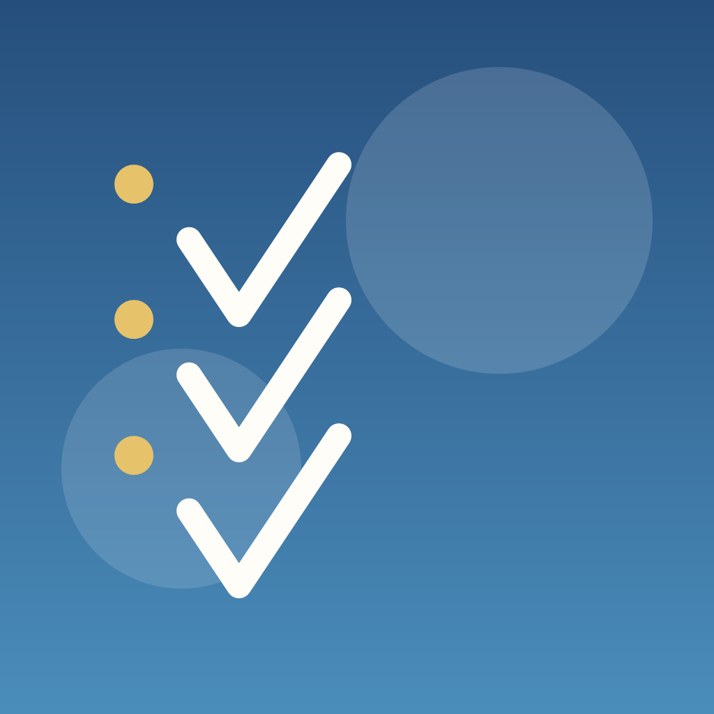
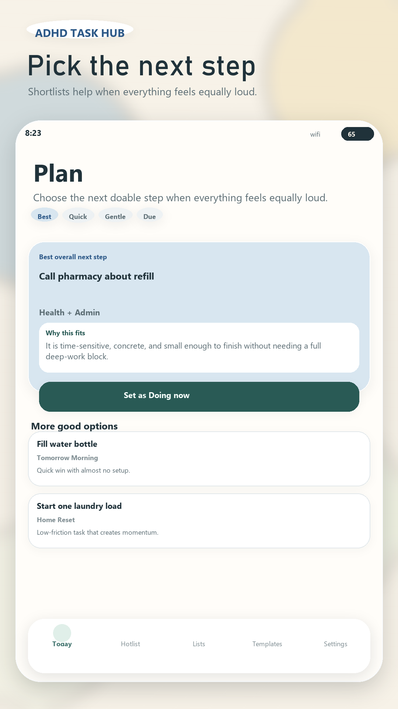
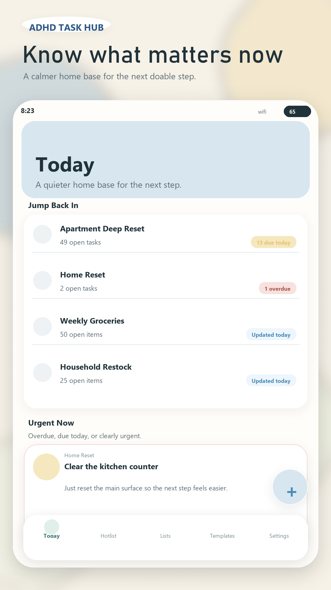

01
Today, Hotlist, and Due Today
See urgent, overdue, due-today, and high-priority work across lists without turning the whole app into a stress signal.

Next Step LabsA local-first Android task manager for adults with ADHD who want calmer structure, clearer priorities, and a practical way to move from task capture to follow-through.
Current release scope
ADHD Task Hub keeps core task data on-device and focuses on the flows people repeat every day: capture, organize, prioritize, focus, repeat, and back up.
See urgent, overdue, due-today, and high-priority work across lists without turning the whole app into a stress signal.
Choose a next action, break down work, or plan a short focus block with rule-based recommendations and optional AI help.
Add due dates, task reminders, and repeat schedules for daily, weekday, weekly, and monthly routines.
Start a protected focus session, snooze or complete the selected task, and export or restore local data when needed.


Trust model
Tasks, subtasks, lists, focus sessions, reminders, recurrence settings, and backups are stored on the device.
The current release does not include account login, team collaboration, or automatic cloud sync for core task data.
AI Plan Assist, purchases, ads, analytics, and diagnostics use network services only where those features apply.
Android-first mobile app built with Expo and React Native.
Closed testing build preparing for Google Play testing.
People who want a calmer task manager for home, admin, reminders, routines, and next-step planning.